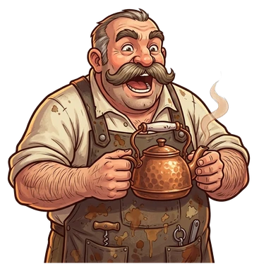
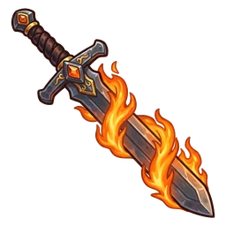
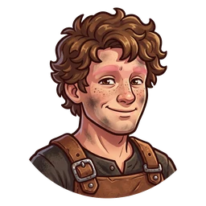
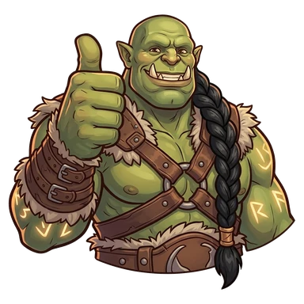

Daggers & Defenses Wiki

HOOOO! Welcome. Daggers & Defenses is a medieval blacksmith idle game inspired by tabletop RPGs: forge weapons and armor, hire apprentices who work on their own, and use your earnings to run an Inn of adventurers who go on expeditions, level up, complete quests and, someday, descend into the Abyss to face Malgoroth.
Get it on Google PlayJoin the Discord
Quick start

Tap products to forge and buy more units. At 25, 50, 100… units the cycle runs twice as fast. Upgrades multiply everything.

They forge on their own, even with the game closed. They're paid in the other forge's currency: keep Crowns and Shields even.

At your 5th product, TomTom opens the Inn: recruit adventurers and send them on expeditions.
When production stalls, reset: every Seal gives +1% income forever.